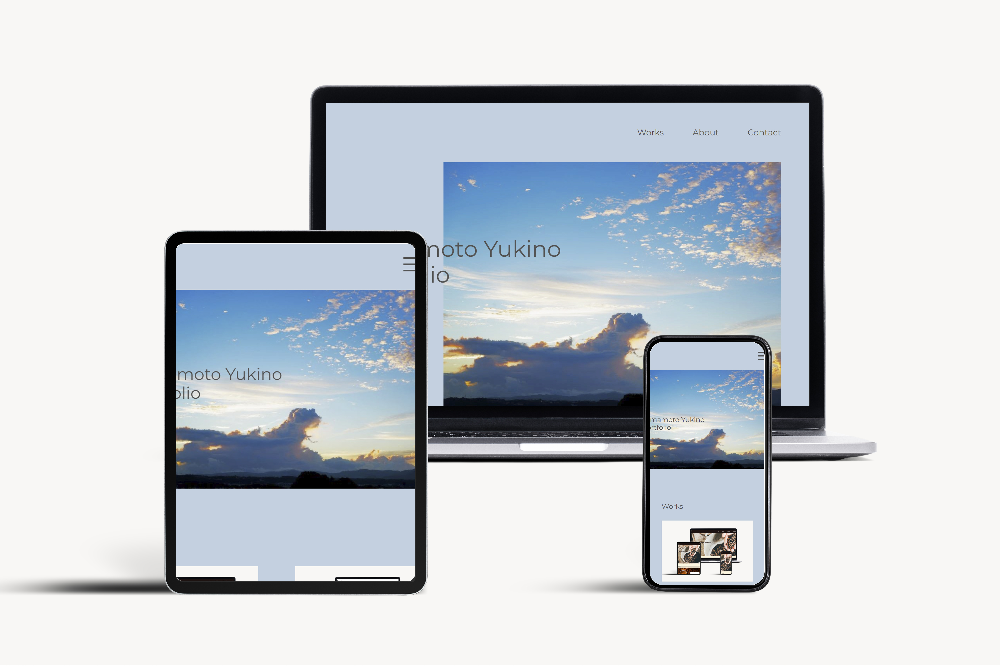

Yamamoto Yukino
Portfolio Site
サイトを見る↗
| 使用ツール | XD/photoshop/vscode |
| 担当範囲 | デザイン/コーディング |
| 制作期間 | 企画・WF：2日 |
| デザイン：3日 | |
| コーディング：2週間 | |
| ボリューム | 6ページ |
-
ターゲット
web制作会社の採用担当者の方々
-
目的
現時点の自分のスキルや強みを、これまでの制作物を通して伝える
-
デザイン
シンプルでわかりやすいデザインを心掛けました。
メインビジュアルにお気に入りの写真を設置し、それに合わせたベースカラーにすることで、 自分らしさを出せるよう工夫しました。
制作物を見てもらうことが目的のサイトであるため、Worksを最初にもっていきました。 -
コーディング
わかりやすさと、ストレスを感じさせないようなアニメーションを意識しました。
ボリュームが少なく、サイトの長さが短いため、ヘッダーが常に上にあるとストレスになると思い、
縦のボリュームが増えるSP版にのみ、fixedを指定しました。